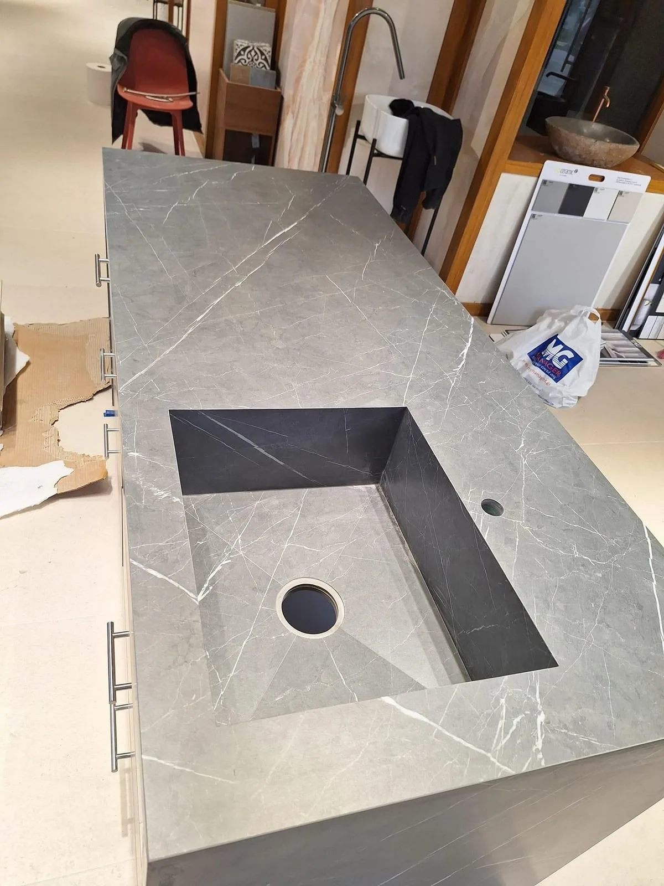

Can you quote from a drawing?
Yes. Send dimensions, the porcelain you have in mind, tap and waste positions and the wall construction, and we will come back with buildability notes and a price, usually within three working days.

For Designers & Architects
You have drawn a 1,600mm trough basin with a concealed linear waste and a 20mm mitred edge. Send us the drawing and we will come back with buildability notes and a price, then fabricate and install it in London.
Send a PDF, a CAD export or a photograph of a sketch. If the detail cannot be built as drawn, we will tell you before anyone commits, and show you what will work instead.
Trade
Most bespoke basin drawings are good designs that nobody has costed against a real slab. Five dull things decide whether you can build one: slab dimensions, mitre thickness, the fall to the waste, how the wall carries the piece, and how it gets up the stairs.
We fabricate in-house and install, so those answers come from the people who will cut the porcelain. You get them before your client sees a price.
See how we fabricate porcelain, look at bespoke porcelain sinks and made-to-measure bathroom basins, or browse completed work.
Wall-hung, floating, integrated and wall-to-wall porcelain basins, including compact cloakroom forms and double-basin compositions.
Porcelain vanity tops with mitred edges, integrated bowls, cut-outs for brassware and matching side returns.
Splashbacks, shelf returns, window reveals and niche linings in matching porcelain, so the room reads as one surface.
Slab installation across walls, floors and feature planes, set out so the joints land where you drew them.

Buildability
A 12mm mitre on a 6mm slab, a waste position that leaves no fall, a 2,400mm span with nothing under the centre. You pay for each of those on site.
We mark them up and send back an alternative that holds your design intent. Fixing it by email this week is cheaper than fixing it on site next month.
Width, depth, height and the internal basin depth, plus the wall run the piece has to sit within.
The slab or finish you have in mind. We will confirm whether it comes in a size the piece needs.
Wall-mounted or deck-mounted, the model if you have chosen it, the centre line, and whether the waste is a standard outlet or a concealed channel.
What the fixing goes into, since on wall-hung pieces it carries the load. Then stairs, lift dimensions, doorways and the date you need it on site.
How We Work
One point of contact from drawing to installation, so you are not chasing a supplier, a fabricator and a fitter in turn. Over 26 years of hands-on experience in tiling, bathroom surfaces and porcelain installation sits behind the work, and we guarantee our workmanship for ten years.
We can stay behind your practice name, or deal with your client direct. Tell us which at the start and we will hold to it.
We price each job rather than publish a rate card, because a 600mm cloakroom basin and a 2,000mm wall-to-wall trough are not the same piece of work.
Frequently Asked Questions
Yes. Send dimensions, the porcelain you have in mind, tap and waste positions and the wall construction, and we will come back with buildability notes and a price, usually within three working days.
PDF, DWG, a rendered elevation or a photograph of a hand sketch. A dimensioned sketch is more useful to us than an undimensioned render.
Yes, if that is how you want to run the project. We can remain the fabricator behind your practice, or deal with your client directly. Tell us at the start.
We price per project and take repeat work into account for practices we work with often. Ask when you send the first drawing.
Where the piece needs it, yes. We template wall-to-wall basins, out-of-square walls and awkward geometry instead of working from assumed dimensions, and we can arrange that visit before fabrication.
Both. We can fabricate and deliver for another trade to install, or fabricate and install ourselves and coordinate with tiling, brassware, cabinetry and wet room details on site.
Trade Enquiries
Dimensions, porcelain, tap and waste positions and the wall build-up are enough to start. We will tell you what it costs and what needs to change.